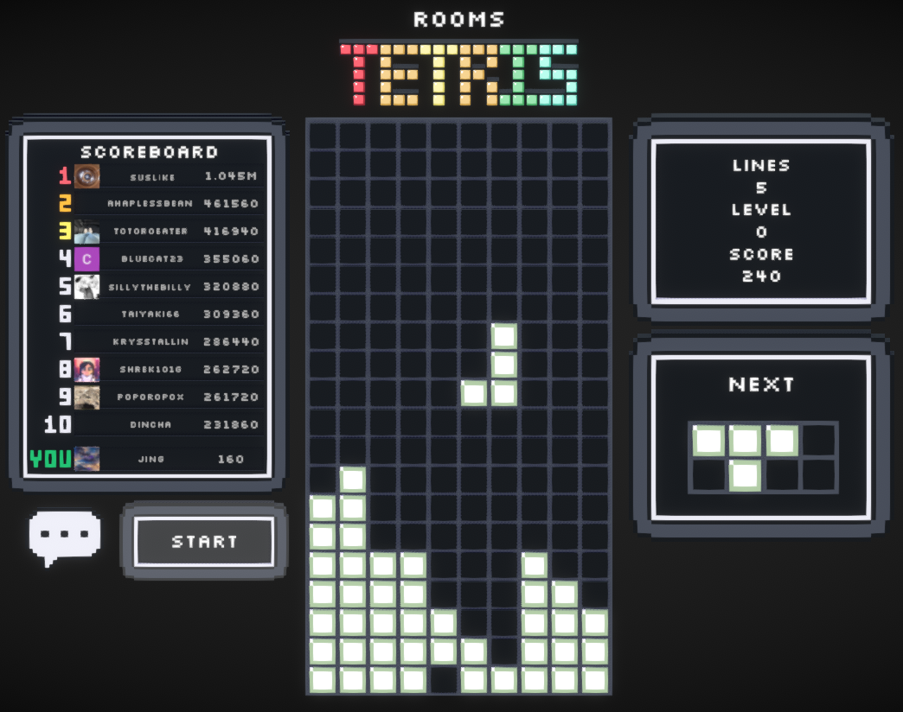

Lua Games (Rooms.xyz)
Rooms.xyz allows you to create voxel-based mini-games and interactive experiences by using voxel objects and Lua scripting. I have enjoyed experimenting with Lua, a language that is completely new to me. Read more about Rooms.xyz here and see my profile here.
These are some of my favourite projects!
Tetris
- Controls to move left and right, and to drop a piece instantaneously
- Scoreboard with scoring based on how many lines have been successfully completed

Sudoku
- Number inserter, deleter, and checker
- Highlights a number when that number is selected
- A set number of puzzles that can be drawn from (I would have ideally created a sudoku solver, so that unique puzzles could be generated, however this was too clunky for this context)
- Scoreboard with scoring based on completetion time and puzzle difficulty
 Back to projects
Back to projects